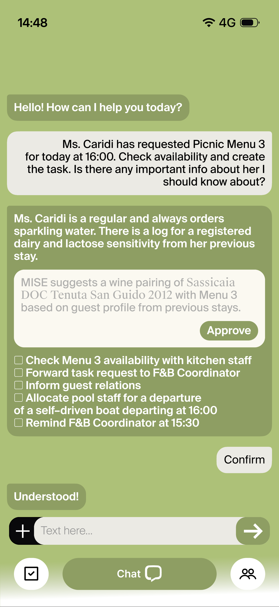

The existing hotel systems are outdated and not sufficient to keep up with operations. Staff are left to work around them and fill in the gaps. Right now hotels rely heavily on memory, spreadsheets, post-it notes.
The consequence is a team that is constantly misaligned, spending more time chasing information than delivering the experience guests are paying for.
Hotels run on multiple disconnected systems — PMS, booking platforms, housekeeping tools, communication apps — each built for a specific function and never designed to share information. A guest preference logged in one system never reaches the staff member who needs it. The systems are not broken. They just do not talk to each other. And nobody built the layer in between.
Staff are forced to improvise and work around the systems. They fill the gaps themselves — chasing updates, relying on informal coordination, Post-its, and memory to keep requests from falling through. Promises made by one shift are invisible to the next. Guest preferences logged in one system never reach the person who needs them.
Slow responses, forgotten preferences, a room that wasn't ready. Not dramatic failures — small gaps that add up, and not match with the guests expectations
Constant context-switching, filling gaps the systems should fill, and absorbing the stress when something falls through. High cognitive load, high turnover, and less time for the interactions that actually matter.
Every coordination failure has a cost — in comped rooms, repeated work, manager time pulled into small emergencies, and guests who don't come back. None of it shows up on a single dashboard, but it compounds daily.
of hotels regularly experience duplicate task dispatch — two people, same job, no visibility.
OxmaintMISE is an AI agent that sits on top of existing hotel systems and acts as an intelligent layer between the systems and the people who use them. It keeps staff aligned across shifts, departments, and guest situations — so the right person always has the right information at the right moment. It picks up requests, assigns tasks to the right person, maintains memory across shifts, and makes sure nothing is lost when someone goes home.
Staff always know what to do next. The team stays aligned. The guest feels the difference.
MISE is an AI agent that sits on top of existing hotel systems and acts as an intelligent layer between the systems and the people who use them. It keeps staff aligned across shifts, departments, and guest situations — so the right person always has the right information at the right moment. It picks up requests, assigns tasks to the right person, maintains memory across shifts, and makes sure nothing is lost when someone goes home.
Staff always know what to do next. The team stays aligned. The guest feels the difference.
The agent picks up requests from any channel, assigns them to the right person based on role and availability, and tracks them to completion. Staff see a prioritised list, every task tied to a guest, with a reason behind the priority.
Their preferences, dietary needs, complaint history, past stays, promises made. The agent draws on this to contextualise every task and surface the right information at the right moment.
The agent automatically compiles a briefing for the incoming team. Open tasks, guest situations, anything unresolved. The next shift starts fully informed — no verbal handover required.
The manager writes plain-language rules that shape how the agent behaves — who handles what, what always escalates, what never gets missed. The agent learns from patterns over time and suggests new rules based on what it observes.
Instead of navigating through menus and screens, staff and managers can interact with the agent directly in natural language — asking questions, reassigning tasks, pulling up guest information, or overriding a decision. Everything the interface does, the chat can do too. It is the fastest way to get to anything, and the most direct way to instruct the agent.

That is the product.